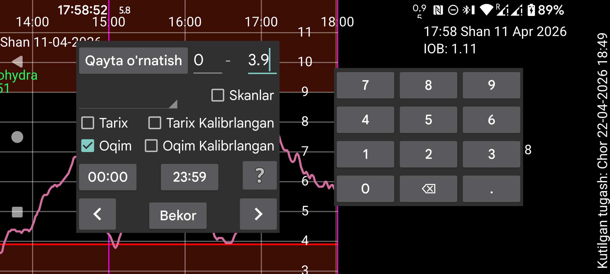

Qidirish yordamida glyukoza qiymatlari va kiritilgan miqdorlarni topish mumkin.
Qiymatlar berilgan ikki son oralig‘ida qidiriladi. Masalan, 10–999 oraliği 10 dan 999 gacha bo‘lgan qiymatlarni topadi.
Glyukoza qiymatlari uch turga bo‘linadi: Skan, Tarix va Oqim.
Agar insulin, iste’mol yoki faollik ma’lumotlarini kiritgan bo‘lsangiz, spinner ichidan mos yorliq ni tanlab, sizni qiziqtirgan son oralig‘ini ko‘rsatib ularni ham qidirishingiz mumkin; masalan velosiped uchun 50 dan 100 gacha.
Shuningdek sizni qiziqtirgan kun vaqti ni ham belgilash mumkin. Masalan, kechasi 22:00 dan ertalab 07:00 gacha bo‘lgan gipolarni qidirmoqchi bo‘lsangiz, birinchi vaqtni 22:00, ikkinchi vaqtni 07:00 qilib o‘zgartiring. Bunda Oqim va/yoki Tarix ham tanlanishi va qiymat oralig‘i 0 dan 3.9 mmol/L gacha (70 mg/dL gacha) ko‘rsatilishi kerak.
Strelka tugmasini bosish qidiruvni ko‘rsatilgan yo‘nalishda boshlaydi.
Tiklash barcha qidiruv parametrlarini boshlang‘ich holatga qaytaradi.
Sozlamalar→Miqdor yorliqlari bo‘limida qaysi yorliq ovqatga bog‘liqligi tanlansa, masalan Uglevod, shu yorliq Yangi miqdor bo‘limida tanlanganda Ovqat tugmasi chiqadi. Agar shu yorliq bu yerda spinnerda tanlansa, ekranning yuqori qismida ma’lum ingredientni va xohlasangiz uning minimal miqdorini qidirish uchun qo‘shimcha maydon paydo bo‘ladi.